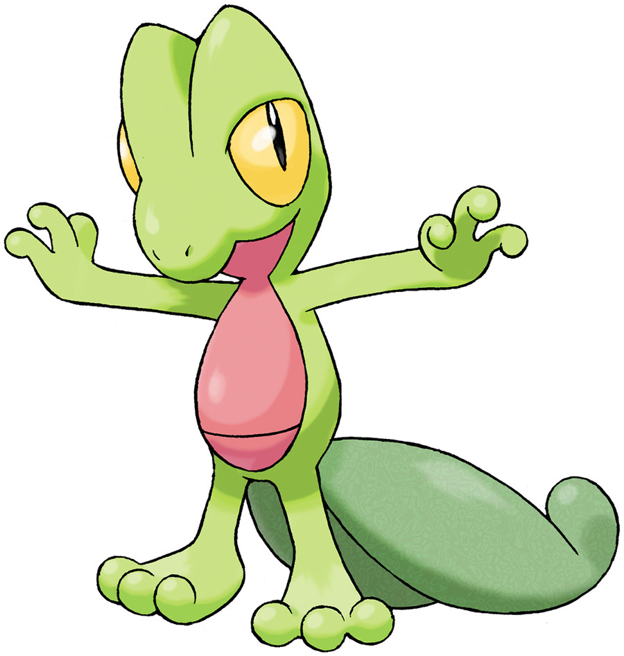

Starter pokemons are often powerful whomerver you choose.
We have ranked these special pokmeon in order of there overall stats in the mainstream game.
Did your favorite pokemon make to to the list.
Make sure to let us know
5. Oshawott
While many people dislike the design of Oshawott’s final evolution, Samurott is
still a strong Pokemon that’s capable of taking down plenty of opponents, with
solid 100 Attack and 108 Special Attack
stats and decent bulk to carry it through most match-ups.
Throw in a wide-ranging movepool that
provides excellent type coverage, and Samurott becomes the most balanced Pokemon
in the Black & White starter trio. It does suffer from poor Speed, but Hisuian Samurott
went some way to fix that
4. Treecko

Treecko often plays second-fiddle to Mudkip, which is widely regarded as
the best Ruby & Sapphire starter, but it can easily stand on its own two feet
as a solid Grass-type glass cannon with a huge 120 Speed stat and 105 Special Attack.
It might not have very good bulk or a secondary typing to help it out,
but it is one of the fastest creatures in its generation, meaning it can hit fast and hard.
The ability to learn False Swipes was also great for catching tricky Pokemon in the wild
3. Froakie
Okay, so Froakie might not be the most appealing starter in its base form –
but when its final evolution is Greninja, who cares!
It’s even been voted the world’s favorite Pokemon, in case its popularity was ever in doubt.
Greninja has the highest Speed stat of any starter Pokemon’s final evolution,
living up to its ninja-inspired name, which means it can unleash brilliant attacks like
? and ? before your opponent knows what’s happening.
2. Charmander
Decades after it made its debut in Red & Blue in the 1990s,
the adorable little Fire-type Charmander remains not just a fan-favorite starter Pokemon,
but one of the most popular Pokemon full stop.
There’s a pretty obvious reason for this… its final evolution is Charizard.
This fearsome creature is arguably the most iconic Pokemon of all time (after Pikachu), appearing in multiple games and spin-offs including Pokken and Super Smash Bros.
It’s got the stats to back that popularity up,
with a huge 109 Special Attack that lends itself well to STAB attacks like Inferno and Air Slash,
while a 100 Speed stat means it will often get to attack first.
Bonus points are awarded for having one of the best Shinies available.
1. Mudkip
As far as starter Pokemon go, Mudkip really does have it all; It’s ridiculously cute,
it’s the best one to choose in its parent games Ruby & Sapphire,
and it also becomes one of the strongest starter final evolutions of all time.
Yes, we’re talking about Swampert.
This powerful Water/Ground-type Pokemon has a really great balance of stats across HP, Defense, and Attack, meaning it has decent bulk and can hit hard with some great moves.
Perhaps the best thing about Swampert is that its unique dual typing leaves it with only one
weakness (Grass) which means it can perform well in the majority of scenarios without worrying too much about being taken out.
That’s it for our list of the best starter Pokemon! It will be interesting to see how the
starter Pokemon in Scarlet & Violet impact this list (if at all) and we’ll be sure to update
when those games are released.